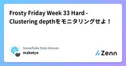
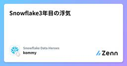
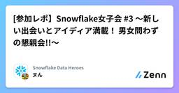
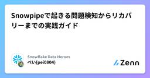
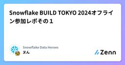

Snowflake Data Heroesのフィード
https://zenn.dev/p/dataheroes
Snowlfake データクラウドのユーザ会 SnowVillage のメンバーで運営しています。 Publication参加方法はこちらをご参照ください。 https://zenn.dev/dataheroes/articles/db5da0959b4bdd
フィード

Frosty Friday Week 33 Hard - Clustering depthをモニタリングせよ！
Snowflake Data Heroesのフィード
こんにちは！KDDIアジャイル開発センターのmakotyoです。今回は、Snowflakeのクラスタリング深度をモニタリングするタスクを作成する問題に挑戦しました。 Week 33のチャレンジ内容今回挑んだ問題はこちらです。https://frostyfriday.org/blog/2023/02/10/week-33-hard/Frosty Friday社では、クラスタリング深度の監視に関する要件があり、これを監視するためのDAGを構築する必要があります。まず、以下のようなテーブルを作成します：create or replace table cluster_depth_...
11時間前

Snowflake3年目の浮気
Snowflake Data Heroesのフィード
前置きこんにちは。私の名はこみぃ。さすらいのデータエンジニアだ。※今日はいつもとは文体を変えてお送りしています。本日の記事はSnowflake Advent Calendarの18日目の記事である。ややタイトルが不穏だが、Snowflakeを運用しはじめて3年目を振り返って今思っていることなどを語りたいと思う。 2022, 2023年の振り返り3年目である2024年について語る前に、まずは最初の2年について語ろう。 2022年 Snowflakeの導入2022年の私は、一言でいうとミスミのじいさんであった。2022年は私のSnowflakeとの出会いの年であり...
1日前

[参加レポ】Snowflake女子会 #3 ～新しい出会いとアイディア満載！ 男女問わずの懇親会!!～
Snowflake Data Heroesのフィード
Snowflake女子会 #3 ～新しい出会いとアイディア満載！ 男女問わずの懇親会!!～に参加したので簡単なレポート開催場所：開催場所：CCCMKホールディングス 渋谷ガーデンタワー9FTAROさんのオフィスですねお品書きLT1：【初心者による調査報告！】SQL、Python、Snowflake初心者が、Streamlit in Snowflake（SIS）をはじめるために、おさえておくと良さそうなこと我如古（がねこ） 聡志 氏補足noteが出たので追記https://note.com/ritz_tableau/n/nd68d3bf23c5dLT2：5分でわかる！ ...
3日前

Snowpipeで起きる問題検知からリカバリーまでの実践ガイド
Snowflake Data Heroesのフィード
Snowpipeは、Snowflakeが提供する強力なデータ取り込みツールです。本記事では、Snowpipeの核となる機能であるデータを確実にSnowflakeに届けるという役目が全うできない状態に陥った時に、どのようにリカバリーするかを解説します。導入前の設計段階での考慮事項については、以下の記事をご参照くださいhttps://zenn.dev/pei0804/articles/snowflake-snowpipe-production-ready!この記事は、SnowflakeがAWS上で動作しており、データソースもAWSである前提で書かれています。 1. 全体像の理...
7日前
Snowflake BUILD TOKYO 2024オフライン参加レポその2
Snowflake Data Heroesのフィード
【生成AIアップデート】Snowflakeの生成AIで実現する社内データ活用促進への道筋 Snowflakeの生成AIであるCortexを活用して、社内データの活用をいかに促進化するかを紹介するセッションです。Snowflake合同会社セールスエンジニアリング統括本部アソシエイトパートナーセールスエンジニア宮川 大司生成AIの概要Cortexシリーズ 概要アプリ開発StudioNoteBookStreamlitコパイロット（開発サポート 現在のプロセスは遅く、非効率的ビジネスユーザーとデータとチームのやり取りビジネスユーザーからの...
7日前

Snowflake BUILD TOKYO 2024オフライン参加レポその１
Snowflake Data Heroesのフィード
Snowflake BUILD Opening KEYNOTE SnowflakeのAI Data Cloudのビジョンと最新の製品アップデートをご紹介いたします。Snowflake合同会社執行役員セールスエンジニアリング統括本部長井口 和弘コラボレーションと事業継続のためのクロスクラウドデータとAIをすべての人に（ガバナンス拡張可能はデータとAIの製品エコシステム 原理原則カスタマーファースト簡単に相互運用性構造化データ、非構造データの取り扱いについて 三つのポイントニーズに応じた柔軟なデータとアーキテクチュア信頼できるエンタープライ...
7日前

[対応必須]2025年4月までにMFA対応しないとSnowflakeが止まります
Snowflake Data Heroesのフィード
はじめに2025年11月、Snowflakeはパスワードのみの単一要素認証を全廃します。これによりすべてのユーザー（人間ユーザー、サービスユーザー問わず）でパスワードのみのログインが不可能となります。すでにSnowflakeでは2024年10月以降に作成される新規アカウントでMFA（多要素認証）がデフォルト有効化されていますが、2025年にかけてさらなる強化が行われ、最終的にはパスワードオンリーの認証方式が完全撤廃されます。そのため、Snowflakeへのログイン方式に関して全体的な見直しが必要となります。本記事では、Snowflakeアカウント管理者向けに、2025年に予定され...
9日前
Snowflake Hybrid Tablesの裏側 - FoundationDBとは何なのか
Snowflake Data Heroesのフィード
この記事は以下の2つのアドベントカレンダーの5日目のポストです。クロスコミュニティ！Snowflake Advent Calendar 2024HTAPデータベース Advent Calendar 2024 Snowflake Hybrid Tables2024年10月についにGAされたSnowflake Hybrid Tablesは、主キーや行ロック、インデックス等を具備した行指向の実装によるOLTP（Online Transaction Processing）的なワークロードと従来のOLAP（Online Analytical Processing）ワークロード双方に同時に...
14日前
Apache Iceberg: The Definitive Guide 輪読会まとめ
Snowflake Data Heroesのフィード
はじめにこんにちは！ナウキャストのデータエンジニアのけびんです。今年の6月に Iceberg Table が Snowflake の機能として GA したのは記憶に新しいかと思います。自分もこの時から Iceberg に興味を持ちブログを書いたりしました。https://zenn.dev/dataheroes/articles/snowflake-iceberg-introductionそんな中、ちょうど良いタイミングで Apache Iceberg: The Definitive Guide が2024年5月に出版されており、 SnowVillage の有志の方たちと輪読...
17日前
【Snowflake】ユーザのパスワードやKey-Pairの生成と設定を行えるStreamlit in Snowflakeを作ろう
Snowflake Data Heroesのフィード
本記事で参考になるケースStreamlit in Snowflakeから、自身 or 他のSnowflakeアカウントのパスワード/Public Keyの設定をStreamlit in Snowflakeアプリから実施したいkay-pair認証のkeyは自動で生成して欲しい 前提Stremalit in Snowflake もしくは Streamlit を利用できることStreamlit in Snowflake利用時は、作成するStreamlitのOwnerがユーザの更新権限を保有していること（alter user権限）Streamlit in Snowflak...
18日前
SnowPro Advanced: Architect（ARA-C01） 合格体験記 ~悲劇を乗り越えて~
Snowflake Data Heroesのフィード
前置きこんにちは。さすらいのデータエンジニアのこみぃです。さて、わざわざこの記事を読んでいる方はご存じの方が多いと思うのですが、Snowflakeには公認資格があります。その名もSnowPro。https://www.snowflake.com/ja/resources/learn/certifications/資格試験の勉強は知識を体系的に学ぶのにいい感じなことがありますので、お仕事でSnowflakeを使っている間は毎年一つくらいずつチャレンジしようかなと思っています。そんなわけで、昨年はSnowProCoreを取得していました。その時の合格体験記がこちら。https...
25日前
参加レポ。第二回 Snowflake金融ユーザー会 ~ 成功した利用拡大施策を共有
Snowflake Data Heroesのフィード
第二回 Snowflake金融ユーザー会 ~ 成功した利用拡大施策を共有2024/11/14(木)Snowflakeオフィスで開催されました Snowflakeによる営業データ活用から始めるDX三菱ＨＣキャピタル株式会社 様営業DXについて古い営業から新しい営業へ情報全社共有化CRMとしてセールスフォースBIとしてtableau結果データを活用したい声が増加基盤編デジタル戦略企画部データマネジメントグループのミッションデータ活用基盤の構築、運用TOBESnowflakeにデータを蓄積しtableauでBIするリ...
1ヶ月前
The Definitive Guide: Apache Icebergへの移行とSnowflake
Snowflake Data Heroesのフィード
記事の概要Apache Iceberg: The Definitive Guide 記載の Apache Icebergへのマイグレ方法のまとめ 前提：Icebergの特徴オープンな仕様オープンソースライブラリ透明性の高いプロジェクトガバナンスプロジェクトガバナンスの多様性ベンダーロックインのなさ多様なエコシステム Icebergへの移行必要とされる対応「既存のデータ構造の適合」「データ取り込みパイプラインの修正」「データ処理ワークフローの更新」Icebergと互換性のある形式でデータストレージを再構築すること も必要です. 特にIaaS...
1ヶ月前
Apache Iceberg: The Definitive Guide 12章 Governance and Security
Snowflake Data Heroesのフィード
はじめにこんにちは！ナウキャストでデータエンジニアをしているけびんです。SnowVillage で行っている Apache Iceberg: The Definitive Guid 輪読会の12章の資料です。12章は "Governance and Security" というタイトルで Iceberg に関連するセキュリティやガバナンスに関するトピックが書かれていますが、その内容をまとめたり、調べて見つけた関連した内容も適宜記載したりしています。!この形式が私の感想・コメントです 12章の introductionIceberg は OTF でありメタデータファイルと...
1ヶ月前
Apache Iceberg: The Definitive Guide 11章 Streaming with Apache Iceberg
Snowflake Data Heroesのフィード
はじめにこんにちは！ナウキャストでデータエンジニアをしているけびんです。SnowVillage で行っている Apache Iceberg: The Definitive Guid 輪読会の11章の資料です。11章は "Streaming with Apache Iceberg" というタイトルで Iceberg でストリーミング処理する話が書かれていますが、その内容をまとめたり、調べて見つけた関連した内容も適宜記載したりしています。!この形式が私の感想・コメントです 11章の introductionストリーミングデータとはさまざまなソースから継続的に生成され処理さ...
1ヶ月前
Snowflake テーブルで生じるスキーマドリフトを Glue データカタログ比較で検出してみる
Snowflake Data Heroesのフィード
こんにちは！シンプルフォームの山岸です。Glue クローラーで Snowflake テーブルを Glue データカタログ化し、ソース DB とのスキーマドリフトが発生しているかどうかをチェックする方法について考えてみたので、今回はその内容についてご紹介できればと思います。 本記事の背景当社ではソース DB 上のテーブルを分析用の Snowflake テーブルに再現するにあたり、以下のような ELT アーキテクチャを実装しています。ソーステーブルの増分データフレームを Glue ジョブで S3 に出力します。S3 に出力されたファイルを Snowpipe 経由でステージングテ...
1ヶ月前
SnowflakeのSQLにおける「*」（アスタリスク）の便利な利用法
Snowflake Data Heroesのフィード
この記事はSnowflake Summit 2024のBuilders Boothで上映されていた動画の中でTipsとしてショートデモ発表した内容です。そういえばブログにしていなかったので改めて記事化します。 SELECT句の「*」とは標準SQLにおいて、「*」はSELECT句で「すべての列」を示すことができるワイルドカードです。select * from customer;これで、列が100個あるテーブルであろうと、SELECT句に列挙せずにすべての列を表示することができます。簡単ですね。※本記事内サンプルクエリはすべてTPC-DSのCUSTOMERテーブルを例にしていま...
1ヶ月前
Snowflakeのパスワードの有効期限切れの罠
Snowflake Data Heroesのフィード
はじめにこんにちは！ナウキャストのデータエンジニアのけびんです。Snowflake では認証方法としてPasswordKey PairSAML を利用した SSOOAuthが用意されています。あるユーザーでの認証方法としてこのうちの複数を利用しているケースはよくあるのではないでしょうか？特にパスワード認証と他の認証方法を組み合わせた際に、パスワードの有効期限が切れてしまうとパスワードの変更するまで任意の認証方法で認証ができなくなるという仕様があります。 パスワードとキーペア認証パスワードとキーペア認証の両方を利用している場合を考えましょう。Snowsig...
2ヶ月前
Apache Iceberg: The Definitive Guid 10章 Apache Iceberg in Production
Snowflake Data Heroesのフィード
はじめにこんにちは！ナウキャストでデータエンジニアをしているけびんです。SnowVillage で行っている Apache Iceberg: The Definitive Guid 輪読会の10章後半の資料です。10章は "Apache Iceberg in Production" というタイトルで Iceberg を本番で運用する際に大事なポイントなどが書かれていますが、その内容をまとめたり、調べてみつけた関連した内容も適宜記載したりしています。!この形式が私の感想・コメントです。 10章の introductionデータエンジニアは効率的で信頼性が高くそして安全な...
2ヶ月前
dbt Docs をホスティングする AWS インフラ構成
Snowflake Data Heroesのフィード
こんにちは！シンプルフォームの山岸です。皆さん、データ基盤のメタデータ管理には何を利用されているでしょうか。当社では現在、Snowflake × dbt を軸としたデータ基盤への移行に向けて検証・構築を進めており、併せて dbt Docs の機能を用いたメタデータ管理・提供方法についても検討しています。今回、dbt Docs を AWS 上で CI/CD、およびホスティングするための AWS インフラ構成について検討してみたので、本記事ではその内容についてご紹介できればと思います。（アーキテクチャの話がメインであり、細かい実装についてはあまり言及しない点について、予めご了承ください...
2ヶ月前